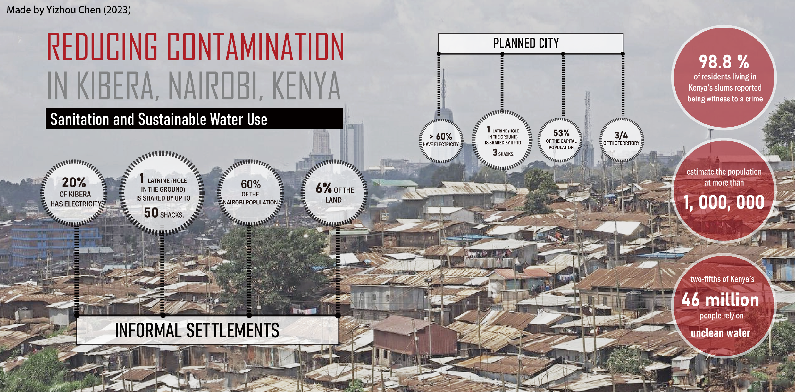
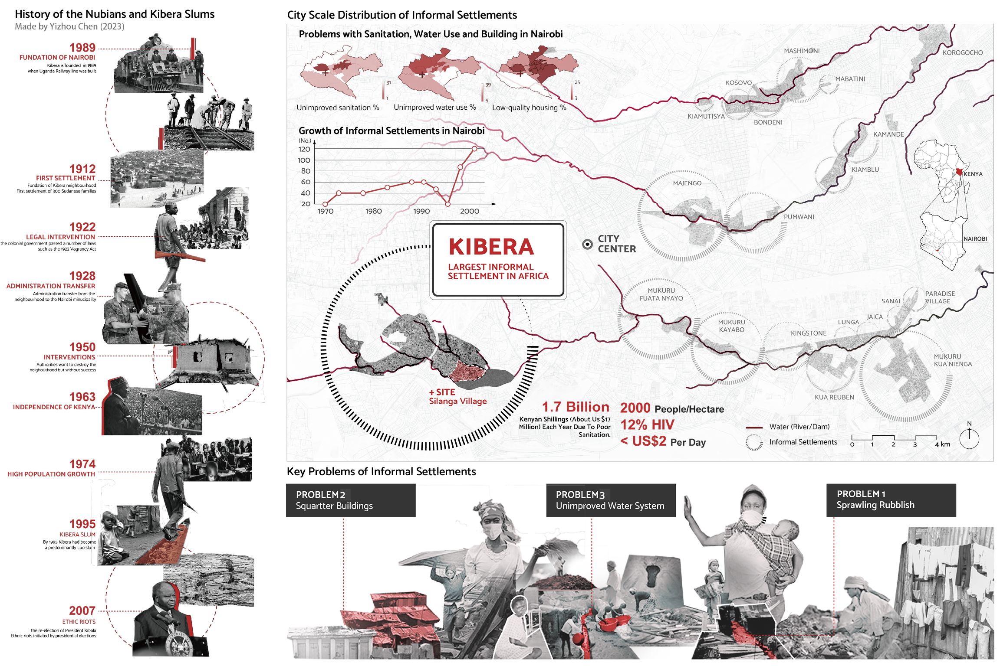
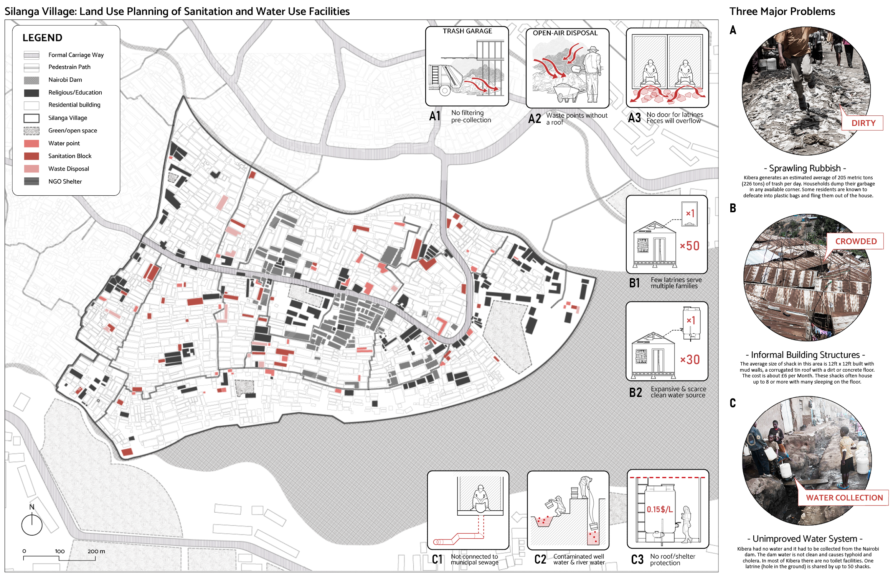
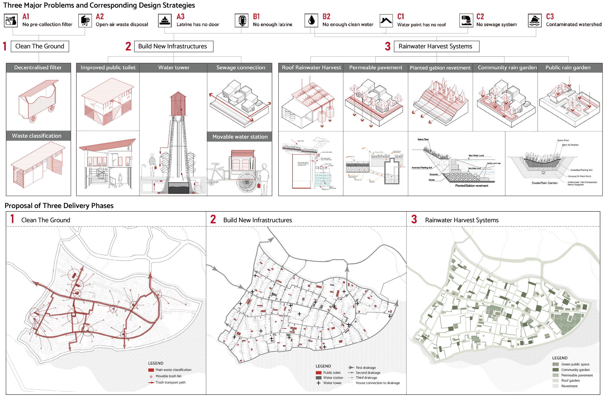
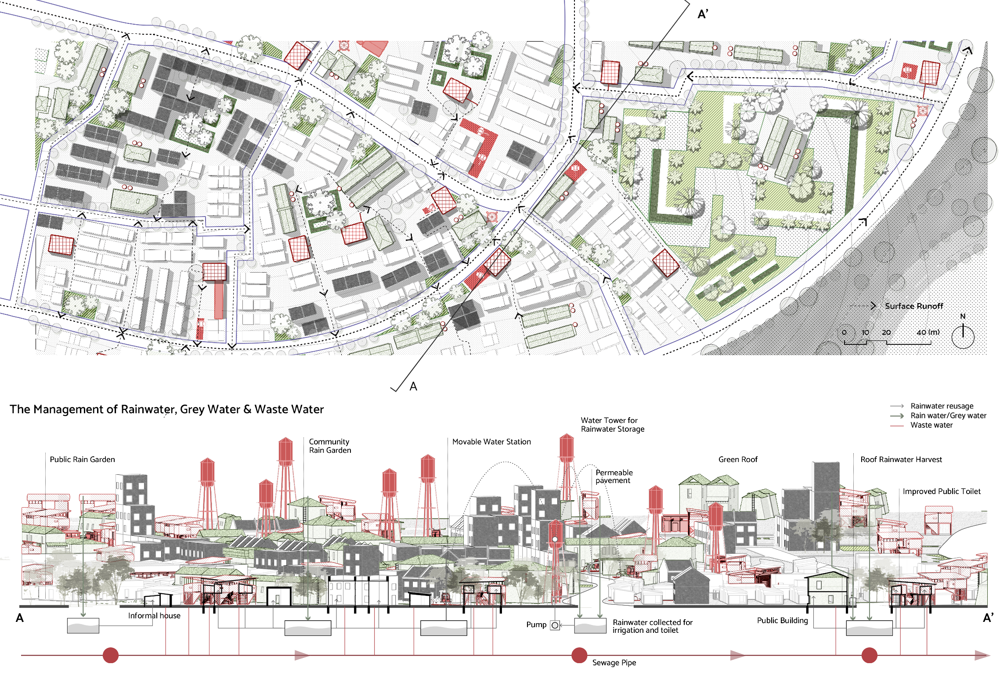

SELF-BUILT CITY | INFORMAL URBANISM

This project is intended to clean away urban garbage, improve water use, and promote the living conditions of residents in the largest African informal settlement, Kibera. The proposed three phases of development include “cleaning the ground", "building new infrastructure", and “reinforcing ecological rainwater harvesting (RWH)". The implementation and delivery will take place via multiple public-private partnerships, locally produced materials, and hands-on initiatives. This project aims to provide innovative insight about the perennial process of formalizing worldwide informal settlements.

Kibera, established in 1889 during the construction of the Uganda Railway, witnessed various political shifts and property ownership changes over time. Despite the Kenyan government's repeated attempts to demolish the neighborhood, their efforts proved unsuccessful. By 1974, rapid population growth and urbanization had transformed Kibera into a predominantly Luo slum.
A significant portion of Kibera's population faces dire conditions, with most residents living in extreme poverty and earning less than $2 per day. Unemployment rates remain alarmingly high, while the prevalence of HIV affects approximately 12% of the community. Disturbingly, cases of assault and rape are frequent occurrences. Educational opportunities are limited due to the scarcity of schools and the financial constraints faced by the majority of residents. Access to clean water is scarce, leading to widespread hygiene-related diseases. Moreover, a significant portion of the slum's population lacks essential services such as electricity, running water, and medical care.
The site is located in Nairobi, the capital of Kenya, which has witnessed a rapid increase in the number of informal settlements since 1995. These illegal lands are now scattered throughout the city, often concentrated around major rivers. The three primary challenges faced by these settlements are unimproved sanitation, inadequate access to clean water, and substandard housing conditions. Notably, Kibera stands as the largest informal settlement in Africa and is particularly afflicted by these three pressing issues.

Silange Village, located within Kibera, is a multicultural community situated along Nairobi Dam and divided by a major road. Kibera, as a whole, generates an estimated average of 205 metric tons (226 tons) of waste daily. Household waste is indiscriminately disposed of in available corners, and some residents resort to defecating in plastic bags, which are then discarded outside their homes. The issue of sprawling rubbish stems from the absence of pre-collection filtering, waste disposal points without adequate roofing, and the absence of doors for latrines, resulting in the overflow of feces.
Additionally, the existing building structures aggravate the situation, with few latrines serving multiple families and limited access to clean water resources. The typical dwelling in this area is a mud-walled shack measuring approximately 12ft x 12ft, with a corrugated tin roof and a dirt or concrete floor. These shacks, often accommodating eight or more individuals, result in overcrowding, with many people having to sleep on the floor.A single latrine, essentially a hole in the ground, is shared by up to 50 shacks.
Unimproved water systems include latrines that are not connected to the municipal sewage system, contaminated well water and river water, and insufficient shelter or protection for water access points. Access to clean water is scarce in Kibera, forcing residents to collect water from the Nairobi dam. However, this water source is contaminated, leading to the spread of diseases like typhoid and cholera. Sanitation facilities, including toilets, are severely lacking throughout most of Kibera.

To address the aforementioned challenges, a three-stage strategy has been devised: "Clean the Ground," "Building New Infrastructure," and "Green Infrastructure Application for Rainwater Harvest System."
In the first stage, we have designed a waste collection route within the site, connecting the existing disposal areas through the establishment of decentralized filter and waste classification stations. This enables pre-processing of waste through filtration and classification before disposal.
Moving to the second stage, existing public toilets have been renovated and supplemented with water towers and movable water stations. The sewerage system has been upgraded and integrated within the site, connecting it to the municipal drainage system.
The third stage focuses on introducing green infrastructure to enhance the site's rainwater management capabilities. This includes implementing roof rainwater harvesting, permeable pavement, planted gabion revetment, community rain gardens, and public rain gardens. Each area divided by primary and secondary sewers will feature a central green space accessible to all households. Public buildings have been equipped with green roofs, while existing playgrounds have been transformed into green public spaces. Permeable pavement will be installed along the roads, and the coastal areas will be redeveloped into green revetments.

The successful completion of the entire project requires the involvement of multiple stakeholders. Firstly, the government announces relevant policy proposals and signing contracts with construction companies and PCV (Pre-cast Vendors) providers. Local employees have the opportunity to seek employment within these companies. After the waste collection in the first stage, the process of material recycling largely involves local residents working in construction companies who will receive training from the KEFRI (Kenya Forestry Research Institute) Carpentry Academy. The recycled materials are then used to assemble new infrastructure, including houses and sewer systems. This participatory design process involves the cooperation of renters, structure owners, and architects from the Kounkuey Design Initiative. In the second and third stages, new public facilities are collectively owned. Kibera Action Group Organization acts as an intermediary, coordinating property division and rental negotiations to resolve conflicts among different structure owners.

The water system's circulation and the upgrading of related infrastructure are of paramount importance in this project. In the second stage, the toilets are directly connected to the municipal sewer system, preventing the accumulation of wastewater on the roads, thus mitigating the issue of floating garbage caused by rainwater runoff. The green infrastructure interventions in the third stage not only manage surface runoff but also effectively filter greywater and rainwater, allowing them to infiltrate into underground reservoirs. The water can then be pumped back for toilet flushing, undergo purification for drinking purposes, evaporate into the air, or replenish groundwater, promoting the overall material cycle within the ecosystem.